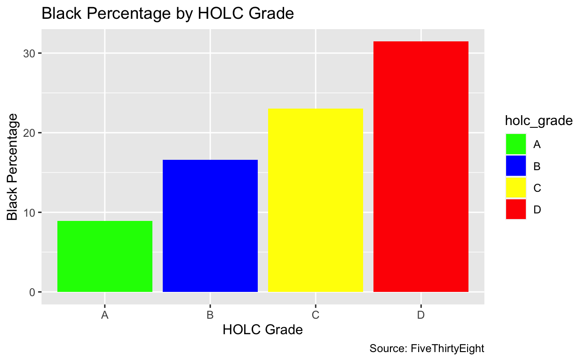

How Has Redlining Impacted Black Populations? An Analysis
Data Source: The Lasting Legacy of Redlining, https://github.com/fivethirtyeight/data/tree/master/redlining
Between 1935-1940, the Home Owners’ Loan Corporation (HOLC) graded 138 metropolitan areas either an A (Best, Green), a B (Still Desireable, Blue), a C (Definitely Declining, Yellow) or a D (Hazardous, Red). The purpose of the HOLC was initially to aide the homeowners and expand housing developments. Yet, the HOLC infamously contributed to something far greater: redlining.
Redlining refers to the discriminatory practice of refusing homes and other financial services to certain neighborhoods. This practice, based on racial composition, has led to decreased property values, lack of access for loans for housing or development, and limited resources for public services for minority communities especially. Though it has since been outlawed, it has had profound and lasting impact on affected communities, violating civil rights and fair housing laws. Addressing redlining is important to understand the relationship between race, housing, and finance and for combating systemic racism through becoming aware of these inequalities.
Today, almost 75% of the zones that the HOLC graded Hazardous, or redlined), are low income. When the HOLC graded neighborhoods, they oftentimes only graded a zone low, or redlined it, if there was a large minority population, specifically Black, living there, citing it as reasoning for downward property trends. The disproportionate effects of the HOLC’s grades are still felt on these Black communities today. This information begs the question: How has redlining impacted Black populations? In this study, I have examined the relationship between redlining and its impact on Black populations.
The dataset I am evaluating is “The Lasting Legacy of Redlining” by FiveThirtyEight. This study contains 2020 population estimates, as determined by the 2020 U.S. Census, in zones for each redlining grade maps, scored by the Home Owners Loan Corporation (HOLC). In each of the cities evaluated (metro_area), a score of A (best) to D (hazardous) was given in regards to the effects of redlining in that micro- or metropolitan area. I hypothesis that the metro_areas in the dataset that received a low holc_grade score (C (Definitely Declining) or D) will today still have higher or disproportionate amounts of Black populations then of other demographic groups, thus contributing to their lower score due to its high Black population at the time. The observed pattern in the data that would support my hypothesis is if areas with higher Black populations and percentages would then receive lower scores of Cs and Ds. This is important because the effects of redlining, like wealth, housing, economic, and health disparities, are still impacting these areas today. So, my study would prove that Black populations still live within these previously determined “less-desired” zones, and are continuing to reap the inequalities they left.
Key variables I will be analyzing in this study are holc_grade, black_pop, total_pop, pct_black, pct_white, and lq_black. The variable holc_grade was measured through a grade of A-D given to each metro_area by the Home Owners Loan Corporation (HOLC). The variable metro_area contains all of the HOLC zones (micro- and metropolitan areas) in the study. The variables black_pop and total_pop were determined by data from the 2020 U.S. decennial census and are population estimates within each HOLC zone. The variables pct_black and pct_white were determined by data from the 2020 U.S. decennial census and are estimates of the total racial population within each HOLC zone in comparison to the rest of the HOLC zone population. The variable lq_black is the Black location quotient given to each metro_area. According to the study, “LQs are small-area measures of segregation that specifically compare one racial/ethnic group’s proportion in a granular geography to their proportion in a larger surrounding geography. An LQ above 1 for a given racial group indicates overrepresentation in that HOLC zone relative to the broader surrounding area, and values below 1 indicate underrepresentation” (FiveThirtyEight).
Throughout my data sections, I have analyzed data for both my main focus of Black populations, as well as included data of white populations as well. This is to show a variation of treatment effect in the (complete) opposite direction for this study. I have done this to show how the treatment worked in the opposite way for the majority population of the time, and to acccount for variations in how the treatment impacted a different demographic group to the one I am focusing on.
metro <- read_csv("data/metro-grades.csv")ggplot(metro, aes(x = holc_grade, y = pct_black, fill = holc_grade)) +
geom_bar(stat = "summary", fun = "mean") +
labs(
x = "HOLC Grade",
y = "Black Percentage",
title = "Black Percentage by HOLC Grade"
) +
scale_fill_manual(values = c("A" = "green", "B" = "blue", "C" = "yellow", "D" = "red"))
The main outcome of interest in this study is the Black population percentage of a metro area in comparison to the rest of the metro area’s demographics. This bar graph demonstrates the relationship between the Black population increase of today and the past HOLC grade the metro area received. As the Black population percentage of an area increases, the more likely they are to receive a worse score.
To further demonstrate this, I have provided a plot with the opposite relationship. The bar graph demonstrates the relationship between the white population increase of today and the past HOLC grade the metro area received. As the white population percentage of an area increases, the more likely they are to receive a better score.
This study is an observational study because the data has not been manipulated by researchers. Instead, it is data collected by researchers from one point in time (2020 U.S. decennial census) and is compared to the 1935-1940 grades given to metro zones by the HOLC. The data involves the collection of existing records and databases.
This study is a cross-sectional study because the data has been collected from one single point in time to understand relationships with variables without any follow-up. In this case, the HOLC grade, or the act of greenlining-redlining, would be considered the treatment, which is then used to see how these neighborhoods today are comprised. If previously redlined neighboorhoods today are similar, then the treatment, or the act of redlining, could be seen as effective or significant. If their population demographics have changed, then the treatment could be seen as ineffective or insignificant. Thus, if current metro areas with significant Black populations were redlined, like my hypothesis suggests, then the treatment could be seen as effective.
pop_table <- metro |>
group_by(holc_grade) |>
summarize(black_pop_mean = mean(black_pop, na.rm = TRUE), total_pop_mean = mean(total_pop, na.rm = TRUE))
knitr::kable(pop_table, col.names = c("HOLC Grade", "Mean of Black Population", "Mean of Total Population"))| HOLC Grade | Mean of Black Population | Mean of Total Population |
|---|---|---|
| A | 2040.935 | 17312.38 |
| B | 12048.362 | 63200.23 |
| C | 28282.212 | 136444.43 |
| D | 20659.978 | 78458.62 |
pop_table# A tibble: 4 × 3
holc_grade black_pop_mean total_pop_mean
<chr> <dbl> <dbl>
1 A 2041. 17312.
2 B 12048. 63200.
3 C 28282. 136444.
4 D 20660. 78459.This table lays out each possible HOLC grade, the mean of all Black populations identified in the study, and the mean of all total populations identified in the study. The purpose of this table is to again show disproportionately among Black populations and how it relates to lower scores. The proportion of A HOLC grades 2040.935/17312.38 in this context is 0.11788875937. The proportion of B HOLC grades 12048.362/63200.23 in this context is 0.19063794546. The proportion of C HOLC grades 28282.212/136444.43 in this context is 0.20728007731. The proportion of D HOLC grades 20659.978/78458.62 in this context is 0.26332323969. Though B is not far off, the disproportions between the average Black population in comparison to the average total populations are highest with grade D and C, the lowest grades. The difference between the D and A scores is 0.14543448032, meaning the areas were 14.5% more likely to receive a score of D then A if they had a higher Black population in comparison to other demographic groups. This also shows how similar the population makeup of these areas are today in comparison to the 1935-1940 grading, and how its impacts are still relevant.
rep_table <- very_under_rep <- sum(metro$lq_black > 0.00 & metro$lq_black <= 0.05)
under_rep <- sum(metro$lq_black > 0.05 & metro$lq_black < 1.0)
equal_rep <- sum(metro$lq_black == 1.0)
over_rep <- sum(metro$lq_black > 1.0 & metro$lq_black <= 1.5)
very_over_rep <- sum(metro$lq_black > 1.5)
knitr::kable(
cbind(
Title = c(
"LQ Scores Between 0.00 and 0.05",
"LQ Scores Between 0.05 and 1.0",
"LQ Scores Equal to 1.0",
"LQ Scores Between 1.0 and 1.5",
"LQ Scores Greater than 1.5"),
Count = c(very_under_rep, under_rep, equal_rep, over_rep, very_over_rep)),
col.names = c("Range", "Count"),
caption = "Counts of Black LQ Scores in Different Ranges")| Range | Count |
|---|---|
| LQ Scores Between 0.00 and 0.05 | 5 |
| LQ Scores Between 0.05 and 1.0 | 261 |
| LQ Scores Equal to 1.0 | 7 |
| LQ Scores Between 1.0 and 1.5 | 167 |
| LQ Scores Greater than 1.5 | 111 |
Interestingly, there is an almost even amount of overrepresentation and underrepresentation of the Black population within the metro areas. 267 areas face underrepresentation of Black people in relation to the broader surrounding area, 278 areas face overrepresentation of Black people in relation to the broader surrounding area and just 7 areas contain a proportionate Black population in relation to the broader surrounding area. This table serves as an example of how redlining has further skewed Black population demographics amongst the metro areas evaluated.
black_total_grade <- options(scipen = 999)
ggplot(data = metro,
mapping = aes(x = total_pop,
y = pct_black,
color = holc_grade
)) +
geom_point() +
geom_smooth(method = "loess", se = FALSE) +
scale_x_log10() +
labs(x = "Total Population of Metro Area",
y = "Percentage of Black Population Compared to Total Population",
title = "Comparison Between Black and Total Population of Metro Areas",
caption = "Source: FiveThirtyEight",
color = "HOLC Grade") +
scale_color_manual(values = c("A" = "green", "B" = "blue", "C" = "yellow", "D" = "red"))black_total_grade$scipen
[1] 0This plot offers a comparison between the Black population percentage of each metro area with its total population. The plot contains data of the percentage of Black population in comparison to the total population for each metro_area, the total population of each metro_area, and the HOLC grade of each metro_area. The scatter plot clearly shows that as the percentage of the Black population increases within a metro area, it is more likely to be redlined (receive a D). By comparing the percentage of the Black population with the total population of a metro area, it is identified that the larger the Black population is, despite its overall population, the more common it is to receive a D, followed by C, then B, and lastly A, which is in line with my hypothesis. If the percentage of the Black population in comparison to the rest of the population is lower, then the area is more likely to have a better score. This demonstrates how the old grading system has impacted the population concentrations of today, and how Black populations were more likely to receive lower scores.
white_total_grade <- options(scipen = 999)
ggplot(data = metro,
mapping = aes(x = total_pop,
y = pct_white,
color = holc_grade
)) +
geom_point() +
geom_smooth(method = "loess", se = FALSE) +
scale_x_log10() +
labs(x = "Total Population of Metro Area",
y = "Percentage of White Population Compared to Total Population",
title = "Comparison Between White and Total Population of Metro Areas",
caption = "Source: FiveThirtyEight",
color = "HOLC Grade") +
scale_color_manual(values = c("A" = "green", "B" = "blue", "C" = "yellow", "D" = "red"))white_total_grade$scipen
[1] 999Conversely, the scatter plot contains data of the percentage of white population in comparison to the total population for each metro_area, the total population of each metro_area, and the HOLC grade of each metro_area. As the percentage of the white population of a metro area in comparison to the rest of its population increases, its HOLC score goes up. Areas with higher white population percentages were most likely to receive an A, followed by B, then C, and lastly D. This proves that a larger and disproportionate amount of white people continue to live in the areas determined the “best” by the 1935-1940 HOLC rankings, continuing to reap the benefits of the grading system today.
library(broom)
regression_black <- lm(pct_black ~ holc_grade, data = metro)
regression_black |>
broom::tidy() |>
select(term, estimate) |>
knitr::kable(digits = 2)| term | estimate |
|---|---|
| (Intercept) | 8.89 |
| holc_gradeB | 7.72 |
| holc_gradeC | 14.12 |
| holc_gradeD | 22.56 |
library(broom)
regression_white <- lm(pct_white ~ holc_grade, data = metro)
regression_white |>
broom::tidy() |>
select(term, estimate) |>
knitr::kable(digits = 2)| term | estimate |
|---|---|
| (Intercept) | 73.78 |
| holc_gradeB | -13.84 |
| holc_gradeC | -25.12 |
| holc_gradeD | -34.38 |
These regression tables further develop the main analysis of my study. As seen in regression_black, when all other predictors are zero, the mean of pct_black in correspondence to an A grade is 8.89. From there, as the scores get lower, the average change in pct_black increases, expecting from the point of inference A to increase 7.72 percentage points for grade B, 14.12 percentage points for grade B, and 22.56 percentage points for grade D. As seen in regression_white, when all other predictors are zero, the mean of pct_white in correspondence to an A grade is 73.78. From there, as the scores get lower, the average change in pct_white decreases, expecting from the point of inference A to decrease 13.84 percentage points for grade B, 25.12 percentage points for grade C, and 34.38 percentage points for grade D. As pct_black increases, holc_grade decreases. As pct_white increases, holc_grade decreases.
This shows an effectiveness in treatment, as the previously redlined neighborhoods have remained to be comprised in the same way as they were when they were first graded. Additionally, the population demographics of the previously greenlined neighborhoods have also remained similar.
Call:
lm(formula = pct_black ~ holc_grade, data = metro)
Residuals:
Min 1Q Median 3Q Max
-30.234 -9.913 -3.718 7.100 60.352
Coefficients:
Estimate Std. Error t value Pr(>|t|)
(Intercept) 8.888 1.427 6.228 0.00000000094177 ***
holc_gradeB 7.724 2.018 3.827 0.000145 ***
holc_gradeC 14.120 2.022 6.983 0.00000000000841 ***
holc_gradeD 22.556 2.018 11.176 < 0.0000000000000002 ***
---
Signif. codes: 0 '***' 0.001 '**' 0.01 '*' 0.05 '.' 0.1 ' ' 1
Residual standard error: 16.77 on 547 degrees of freedom
Multiple R-squared: 0.1979, Adjusted R-squared: 0.1935
F-statistic: 44.99 on 3 and 547 DF, p-value: < 0.00000000000000022var_labels <- c(
"(Intercept)" = "Intercept",
"holc_gradeB" = "HOLC Grade B",
"holc_gradeC" = "HOLC Grade C",
"holc_gradeD" = "HOLC Grade D"
)
modelsummary::modelsummary(fit_black,
statistic = c("s.e. = {std.error}",
"p = {p.value}"),
coef_map = var_labels,
gof_map = c("nobs", "r.squared", "adj.r.squared"))| (1) | |
|---|---|
| Intercept | 8.888 |
| s.e. = 1.427 | |
| p = <0.001 | |
| HOLC Grade B | 7.724 |
| s.e. = 2.018 | |
| p = <0.001 | |
| HOLC Grade C | 14.120 |
| s.e. = 2.022 | |
| p = <0.001 | |
| HOLC Grade D | 22.556 |
| s.e. = 2.018 | |
| p = <0.001 | |
| Num.Obs. | 551 |
| R2 | 0.198 |
| R2 Adj. | 0.194 |
Call:
lm(formula = pct_white ~ holc_grade, data = metro)
Residuals:
Min 1Q Median 3Q Max
-62.485 -10.768 2.126 11.782 46.776
Coefficients:
Estimate Std. Error t value Pr(>|t|)
(Intercept) 73.775 1.573 46.889 < 0.0000000000000002 ***
holc_gradeB -13.835 2.225 -6.218 0.000000001 ***
holc_gradeC -25.124 2.229 -11.270 < 0.0000000000000002 ***
holc_gradeD -34.381 2.225 -15.451 < 0.0000000000000002 ***
---
Signif. codes: 0 '***' 0.001 '**' 0.01 '*' 0.05 '.' 0.1 ' ' 1
Residual standard error: 18.48 on 547 degrees of freedom
Multiple R-squared: 0.3276, Adjusted R-squared: 0.3239
F-statistic: 88.82 on 3 and 547 DF, p-value: < 0.00000000000000022var_labels <- c(
"(Intercept)" = "Intercept",
"holc_gradeB" = "HOLC Grade B",
"holc_gradeC" = "HOLC Grade C",
"holc_gradeD" = "HOLC Grade D"
)
modelsummary::modelsummary(fit_white,
statistic = c("s.e. = {std.error}",
"p = {p.value}"),
coef_map = var_labels,
gof_map = c("nobs", "r.squared", "adj.r.squared"))| (1) | |
|---|---|
| Intercept | 73.775 |
| s.e. = 1.573 | |
| p = <0.001 | |
| HOLC Grade B | −13.835 |
| s.e. = 2.225 | |
| p = <0.001 | |
| HOLC Grade C | −25.124 |
| s.e. = 2.229 | |
| p = <0.001 | |
| HOLC Grade D | −34.381 |
| s.e. = 2.225 | |
| p = <0.001 | |
| Num.Obs. | 551 |
| R2 | 0.328 |
| R2 Adj. | 0.324 |
The regression run proves statistical significance in my data. With a p-value of p = <0.001, it proves that these data results are highly statistically significant and not due to random chance. In terms of the situation at hand, they mean that the redlining had a direct effect on the population demographics to this day, and they remain similar to what they were at the time of the first grading.
The main coefficient of interest in my regressional analysis is the holc_grade coefficients. As proven by the p-value, these coefficients are statistically significant, and it can be observed that the relationship between holc_grade and pct_black and holc_grade and pct_white was unlikely to happen due to chance. However, in regards to observing this relationship causally, caution is necessary. The observed relationship between holc_grade and pct_black and pct_whitecould be influenced by various other unmeasured or uncontrolled factors. So, the regression analysis has uncovered an association between the variables, but inferring causality solely from this regression analysis could be misleading as it does not establish causation itself.
The results of my study have shown that the grades given to metro areas by the HOLC from 1935-1940 have left lasting impressions on the population demographics of these metro areas today. I have established a correlation between the percentage of a racial demographic of a metro area in comparison to its total population and the HOLC grade the metro area received. The larger the Black population is in the metro area, the more likely they were to receive a low HOLC grade. The larger the white population is in the metro area, the more likely they were to receive a high HOLC grade. This relationship has been proved statistically significant through a regressional analysis of the variables.
My hypothesis has been proven. The larger the Black population was in a metro area today, the more likely they were to receive a lower grade previously. However, there are some limitations in this analysis due to confounding variables. Other factors, not just the HOLC grades, may have impacted the population demographics of today’s metro areas. This includes geographical location, familial relationships, and policy interventions beyond the HOLC system. Additionally, a reverse causality may have been predetermined, as when the HOLC was conducting their grading, areas with larger Black populations were given lower grades from the start. With more time and money, further analysis could be done to follow the census trends over time, not just comparing the 2020 results, to confirm this imprint that the HOLC grading system has left. Additionally, other factors could be accounted for, not just population demographics, of the areas as well, like financial stability and quality of life. But, the socioeconomic factors likely contributing to this phenomenon were pushed through due to the HOLC grading system, demonstrating that this treatment is what led to the results of the population demographics of today.
This data is important because it confirms the longlasting negative impact that redlining has had on cities across the United States. Today, those within redlined areas continue to deal with the negative consequences that the grade placed upon them, while those in greenlined areas have been able to benefit from the system. Reversing the systemic effects of redlining is crucial to promote equity, address systemic inequality, foster economic growth, and build diverse and conclusive communities.